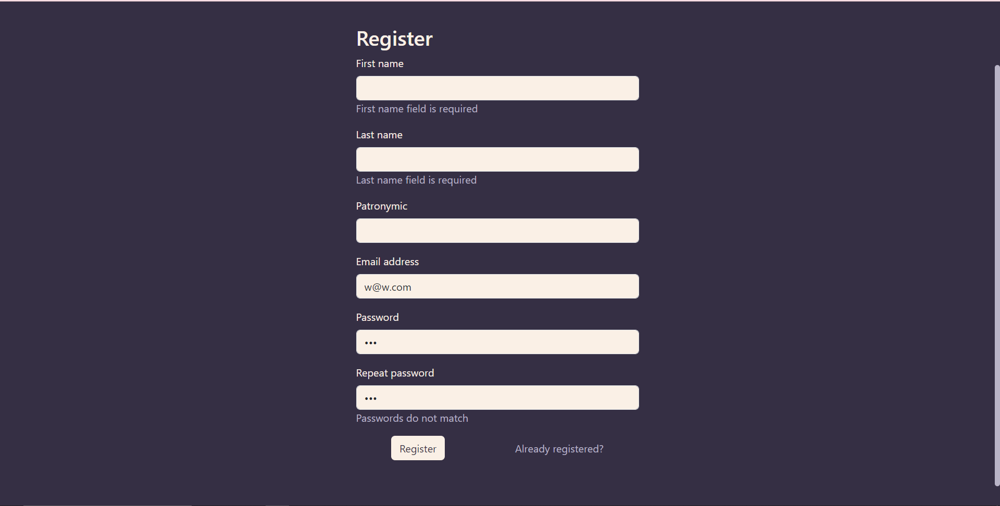

Реализация сайта средствами Vue.js
Цель: Реализация клиентской части приложения средствами vue.jss
Текст работы
Музыкальный плеер
Ход работы
В работе использовался vue-router для маршрутизации:
@/router/routes.js
import HomePage from "../views/HomePage.vue";
import ProfilePage from "../views/ProfilePage.vue";
import SearchPage from "../views/SearchPage.vue";
import LoginPage from "../views/auth/LoginPage.vue";
import RegisterPage from "../views/auth/RegisterPage.vue";
import NotFoundPage from "../views/NotFoundPage.vue";
import SecureComponent from "../components/SecureComponent.vue";
import PublicComponent from "../components/PublicComponent.vue";
export default [
{
path: '',
meta: { requiresAuth: true },
component: SecureComponent,
children: [
{
path: '',
name: 'home',
component: HomePage
},
{
path: '/profile',
name: 'profile',
component: ProfilePage
},
{
path: '/search',
name: 'search',
component: SearchPage
},
],
},
{
path: '',
meta: { blockedForAuthenticated: true },
component: PublicComponent,
children: [
{
path: '/login',
name: 'login',
component: LoginPage,
},
{
path: '/register',
name: 'register',
component: RegisterPage,
},
],
},
{
name: '404',
path: '/:catchAll(.*)',
component: NotFoundPage
}
]
@/router/index.js
import { createRouter, createWebHistory } from 'vue-router'
import routes from './routes.js'
import useAuthStore from "../pinia/auth";
const router = createRouter({
history: createWebHistory(import.meta.env.BASE_URL),
routes: routes,
})
router.beforeEach(async (to, from) => {
let user
let authStore = useAuthStore()
user = await authStore.getUser()
if(to.meta.requiresAuth && !user) {
return {
name: 'login'
}
}
if(to.meta.blockedForAuthenticated && user) {
return {
name: 'home'
}
}
})
export default router
Перед рендером страницы роутер проверяет, аутентифицирован ли пользователь, и разрешает или блокирует доступ к защищенным страницам соответственно.
В качестве менеджера состояния используется pinia. Всего в приложении два
store’a для работы с проигрываемыми треками и аутентификацией
пользователя
@/pinia/auth.js
import { defineStore } from 'pinia'
import router from "../router";
import http from "../services/httpClient";
const useAuthStore = defineStore('auth', {
state: () => ({
user: null,
}),
getters: {
isAuthenticated() {
return this.user !== null
},
},
actions: {
setUser(user) {
this.user = user
},
register(user) {
http.post(
'register',
{...user},
).then(res => {
router.push({name: 'login'})
}).catch(e => {
//
})
},
login(user) {
http.post(
'login',
{...user}
).then(res => {
router.push({name: 'home'})
}).catch(err => {
//
})
},
logout() {
http.post(
'logout',
).then(res => {
this.$reset()
router.push({name: 'login'})
})
},
async getUser() {
if (!this.user) {
let user
try {
user = (await http.get('me')).data
} catch (e) {
user = null
}
this.user = user
}
return this.user
},
},
persist: true,
})
export default useAuthStore
@/pinia/player.js
import { defineStore } from 'pinia'
const usePlayerStore = defineStore('player', {
state: () => ({
currentSong: null,
playlist: [],
}),
getters: {
getCurrentSong() {
return this.playlist[this.currentSong]
},
},
actions: {
setCurrentSong(song) {
this.playlist = [song]
this.currentSong = 0
},
addToPlaylist(song) {
this.playlist.push(song)
},
setCurrentPlaylist(playlist, play = true) {
this.playlist = playlist
if (play) {
this.currentSong = 0
}
},
playNextSong() {
if (this.playlist.length > this.currentSong + 1) {
this.currentSong += 1
}
},
playPreviousSong() {
if (this.currentSong > 0) {
this.currentSong -= 1
}
},
},
persist: true,
})
export default usePlayerStore
Для сохранения состояния используется библиотека pinia-plugin-persistedstate. Сохранение состояние позволяет сохранять сессию аутентификации и проигрываемый плейлист после перезагрузки страницы.
Для обращения к api использовался axios:
@/services/httpClient.js
import axios from "axios"
class HttpClient {
get(
url,
params
) {
return new Promise((resolve, reject) => {
axios.get(url, {params: params}).then(res => {
resolve(res.data)
}).catch(e => {
reject(e)
})
})
}
post(
url,
data
) {
return new Promise((resolve, reject) => {
axios.post(url, data).then(res => {
resolve(res.data)
}).catch(e => {
reject(e)
})
})
}
}
export default new HttpClient()
Скриншоты страниц приложения
Страница регистрации

Страница логина
Домашняя страница
Страница поиска
Страница профиля


Заключение
В процессе лабораторной работы было создано клиентское приложения на vue.js, использующее реализованное в прошлой лабораторной работе API, для поиска и прослушиваня аудиодорожек, с возможностью регистрации, добавления дорожек в понравившиеся, составления плейлистов